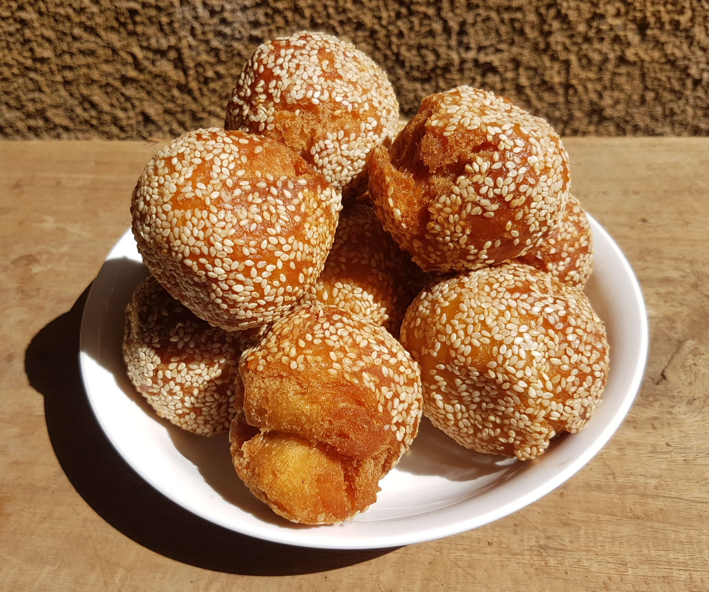

Home
Binangkal

Ingredients
- 2 cups all-purpose flour
- 1/4 Cup cornstarch
- 3/4 Cup white sugar
- 1/4 teaspoon Salt
- 1 teaspoon baking powder
- 2 tablespoons salted butter melted
- 1 large egg
- 1/2 Cup evaporated milk
- 1/2 Cup sesame seeds,
- 1/4 teaspoon vanilla (Optional)
Steps
- Combine all dry ingredients in a bowl: flour, cornstarch, sugar, salt, and baking powder. Mix well.
- In a separate bowl mix together milk, melted butter, and egg. Mix well.
- Slowly add the dry ingredients into the wet mixture. Mix well to form a dough.
- Scoop a tablespoon mixture to form a ball and roll it into the sesame seeds.
- Prepare oil in a pan for deep frying. Make sure the oil is hot before putting the dough.
- Deep fry until golden brown.